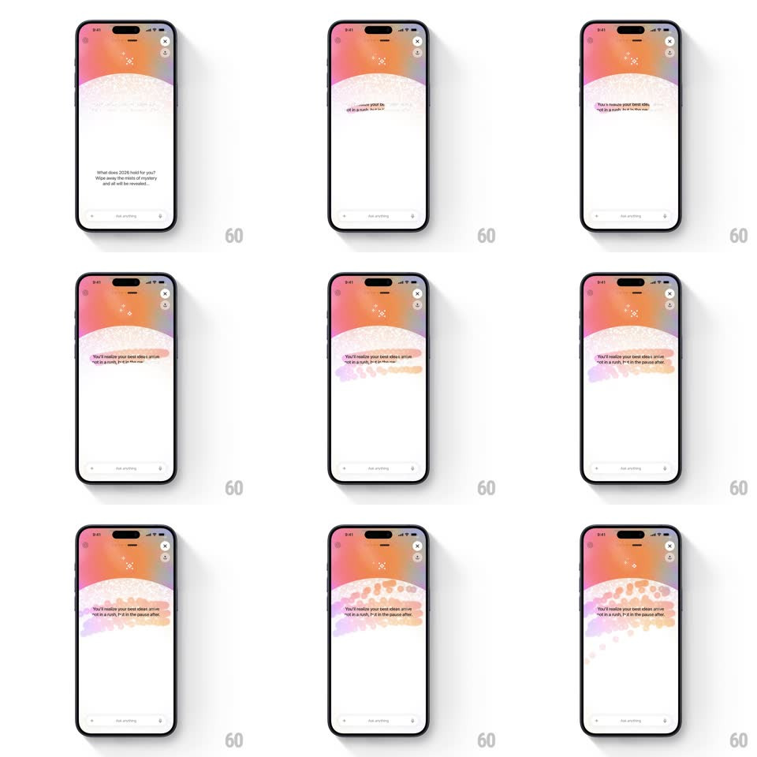

Media
Frame-by-frame

Rebuild this interaction 1:1: ChatGPT's year-ahead scratchcard - wipe the misty foil with your finger and the 2026 prediction reveals underneath through colorful scratch strokes.

Rebuild this interaction 1:1: ChatGPT's year-ahead scratchcard - wipe the misty foil with your finger and the 2026 prediction reveals underneath through colorful scratch strokes. ## Integration Integration: stack-agnostic spec - springs given as stiffness/damping, timed motions as duration + curve; map every value to your framework and animation library of choice. ## Scene An aurora-gradient screen (peach, pink, violet) with close and share buttons up top and the Ask Anything bar at the bottom. The body copy invites the gesture: "What does 2026 hold for you? Wipe away the mists of mystery and all will be revealed." The message area sits under a misty foil layer; beneath it, the reveal text: "You'll realize your best ideas arrive not in a rush, but in the pause after." ## Motion spec Pattern: scratchcard gesture - touch erases a foil mask to reveal hidden text. - The foil is a soft misty layer (pale, lightly textured, slightly sparkling) laid over the reveal zone; it sits within the aurora field so unscratched it reads as a cloud bank. - Touch scratches erase along the finger path: a soft-edged brush (~48pt radius, 85% hardness) clears the foil in real time, exposing the text only where wiped - strokes leave ragged painterly edges, tinted by the aurora beneath (pink/violet/orange fringes on the stroke borders). - As coverage passes thresholds, the revealed text sharpens: at 40% the words are legible through remaining wisps; at 70% the rest of the foil dissolves (fade 400ms) and the full message reads clean. - A faint particle sparkle trails the scratching finger and drifts off (500ms life). - The prompt copy fades once scratching starts (200ms) so the reveal owns the screen. ## Calibration - Erasing is touch-true - no auto-reveal on tap; the user must actually wipe. - The foil edge where scratched stays organic - no straight wipe lines or rectangular clears. ## Reduced motion A single "Reveal" button fades the foil (400ms) - no scratch requirement. ## Don't miss - The reveal is a sentence about pauses, styled in italic serif - it must feel like a fortune, not a stat. - The foil never fully covers the screen - the aurora frame stays visible around the mist.